RFID · Wireless Identification · Automation
RFID Library Automation System (ISO 15693)
Implemented a radio-frequency identification (RFID) system for library automation: tagged items are identified over RF by readers at the counter, self-service kiosk, shelves and exit gates, with every transaction recorded in a host database.
Implemented Project
System overview
- Role
- Design, implementation and technical presentation of the system.
- How it works
- The reader energizes the tag through its antenna (RF coupling); the tag returns its data, which the host PC logs in the database and can write back to the tag. A personalizer programs tags for new items.
- Tags
- Chip, antenna and package. Passive HF tags (reader-powered, centimetres at the pad up to about 1 m at the gates, about USD 1, no maintenance) chosen over active tags (battery, up to 100 m, up to 128 KB, USD 10–100).
- Reader
- ISO 15693 at 13.56 MHz, RS-232 interface, SIP / STX-ETX protocol, metal housing, 230 V, CE and radio approval.
- Library use
- Staff counter, self check-in/out kiosk, handheld shelf inventory, book-drop and security gates: faster circulation, fast inventory, theft prevention and usage statistics.
Engineering rationale
From RF identity to circulation
A passive tag is energized by the reader field and returns item data. The reader-to-host interface transports that data to the application, where it becomes a library transaction. The host/database remains the record of circulation.
Different protocol boundaries
ISO 15693 describes the HF reader/tag interface. RS-232 and STX/ETX framing describe the reader/host connection. SIP/SIP2 describes interchange with the library application; it is distinct from telecom SIP in the IMS project.
Original slides and new diagrams
The repository contains original presentation figures and a richer set of technical diagrams. Vendor-dependent examples such as memory layout, tag security conventions and gate fallback should be read as explanatory design patterns unless verified against the deployed hardware. The new overview is similarly labelled.
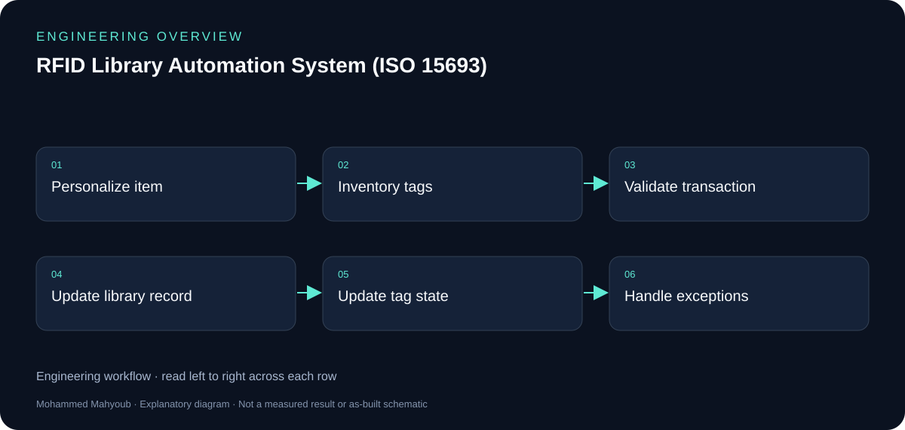
Evidence and validation
Review the documented implementation against these validation topics; measured results are shown only where provided by the source.
- Tag identity and item mapping
- Check-in/out and security-state confirmation
- Gate/inventory exception cases
- Vendor interface and tag-model verification
Source gallery
Figures from the existing project repository, public notebook outputs, or corresponding LinkedIn project media. Original screenshots and existing explanatory figures retain their source context.

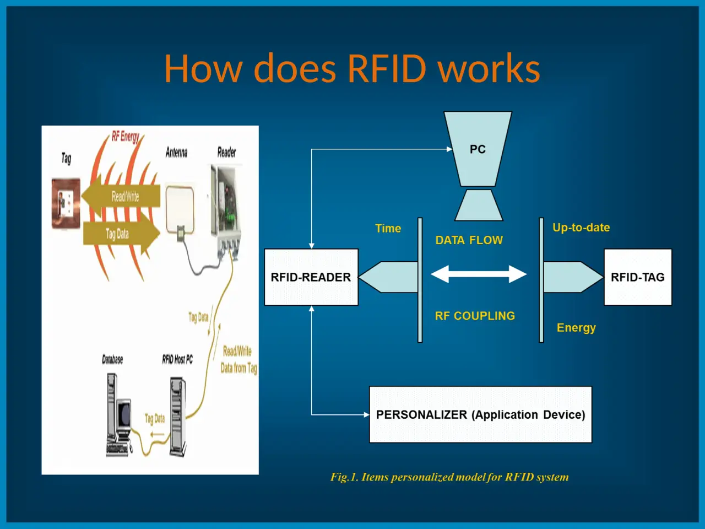

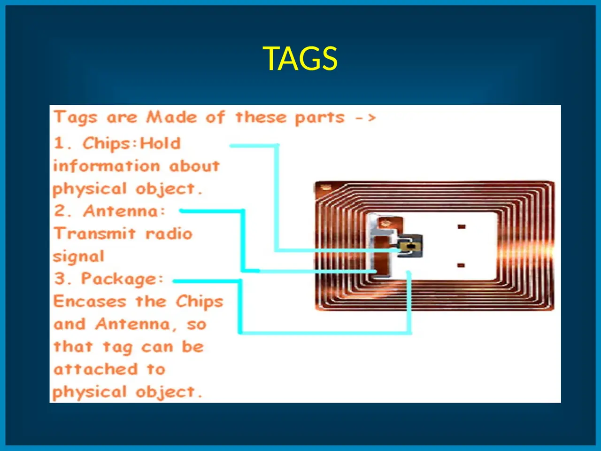

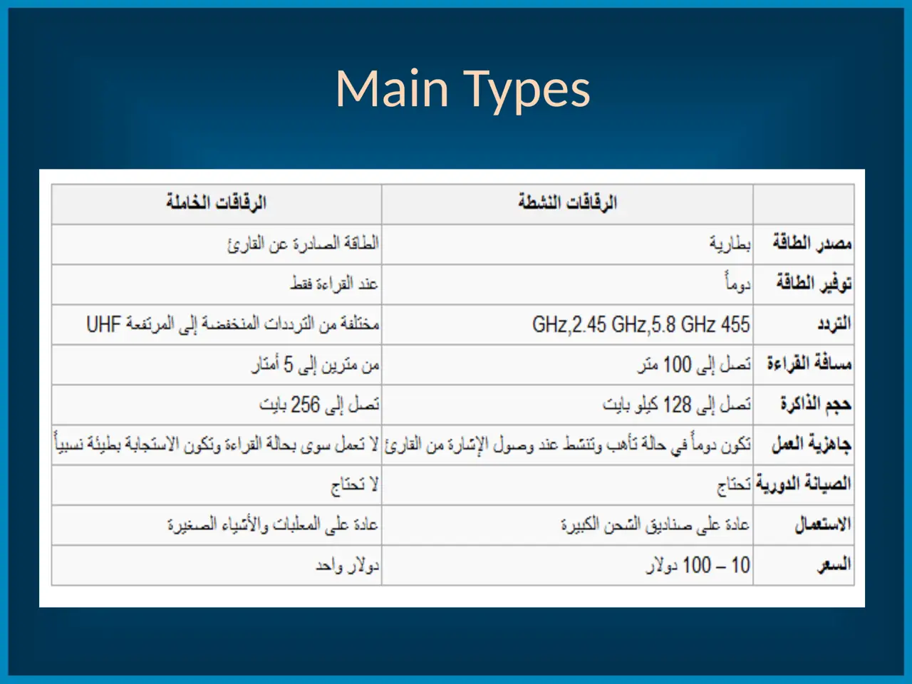


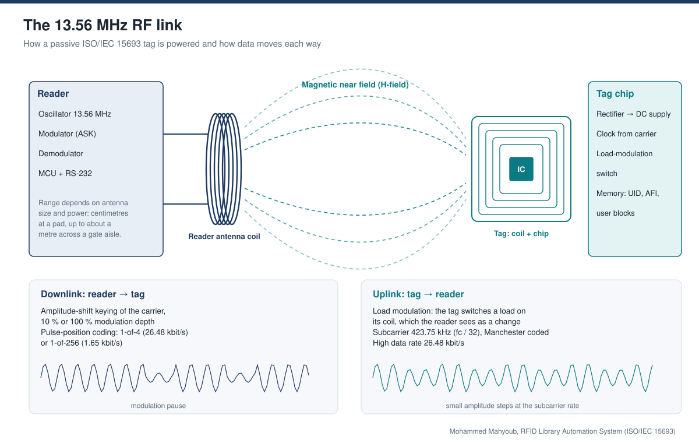


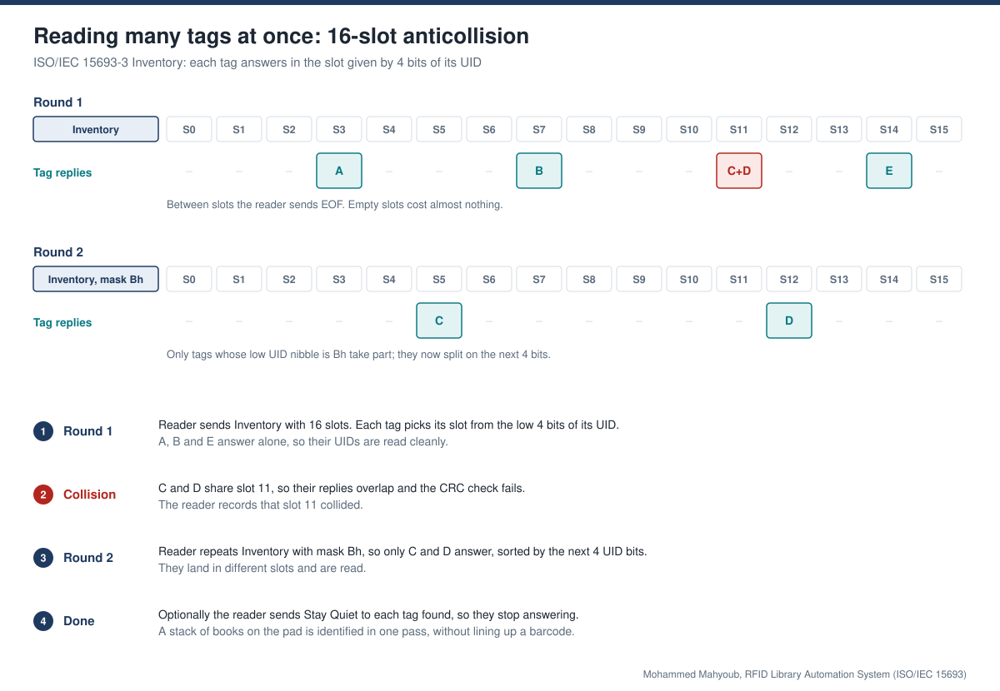

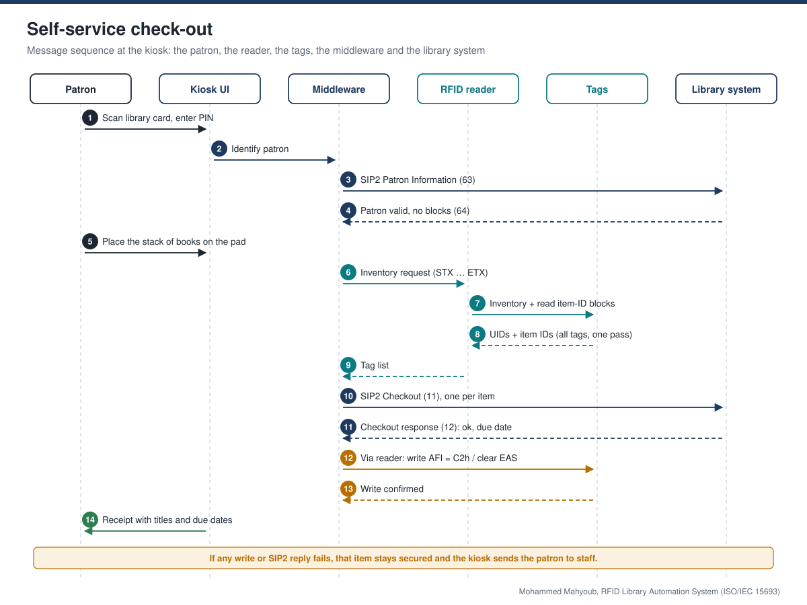


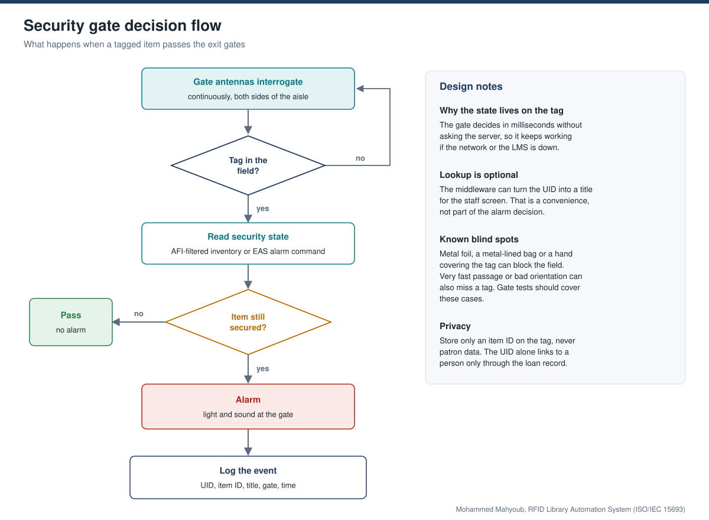

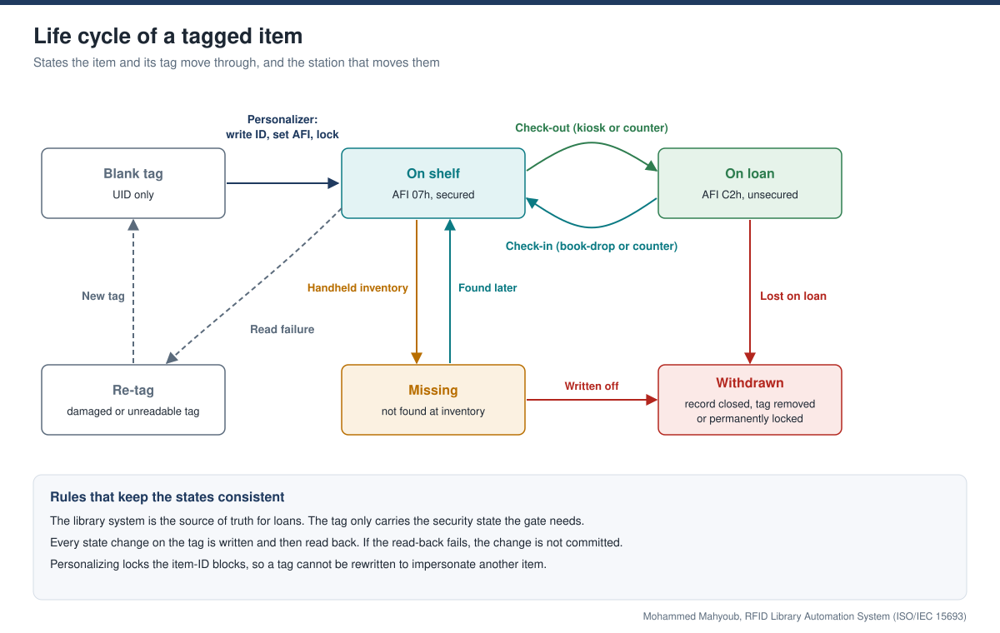

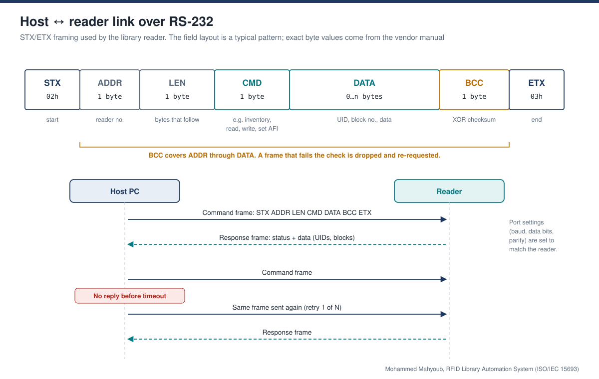

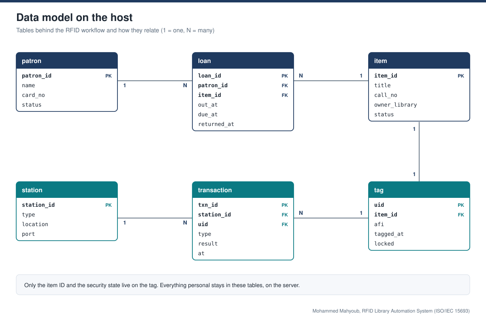

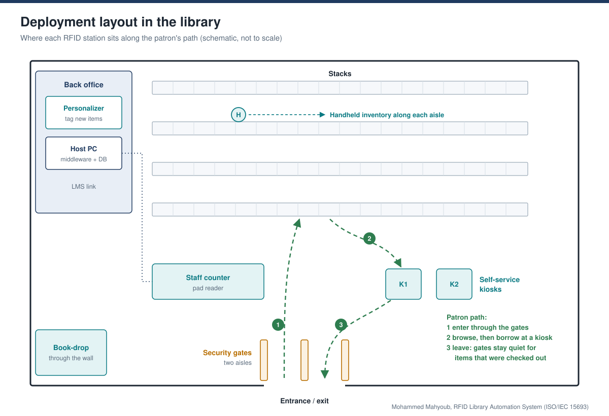

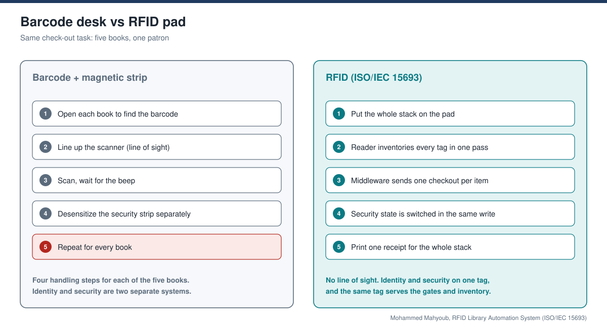